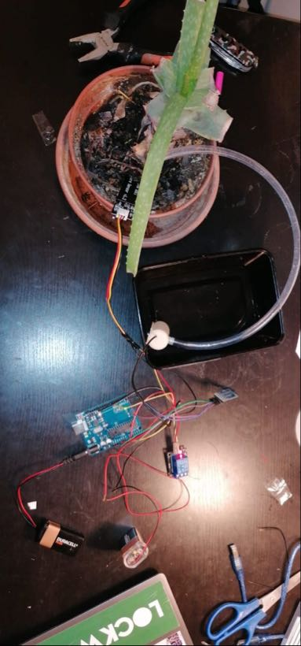
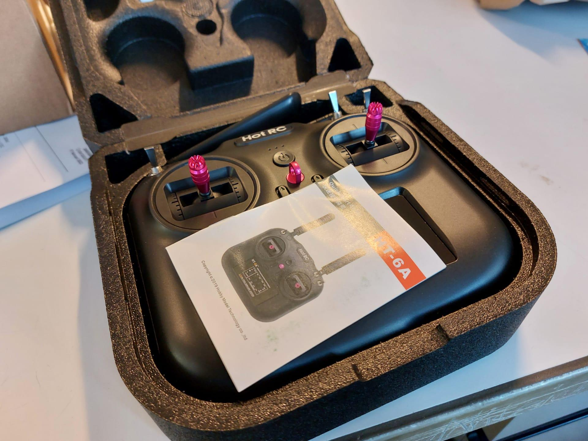
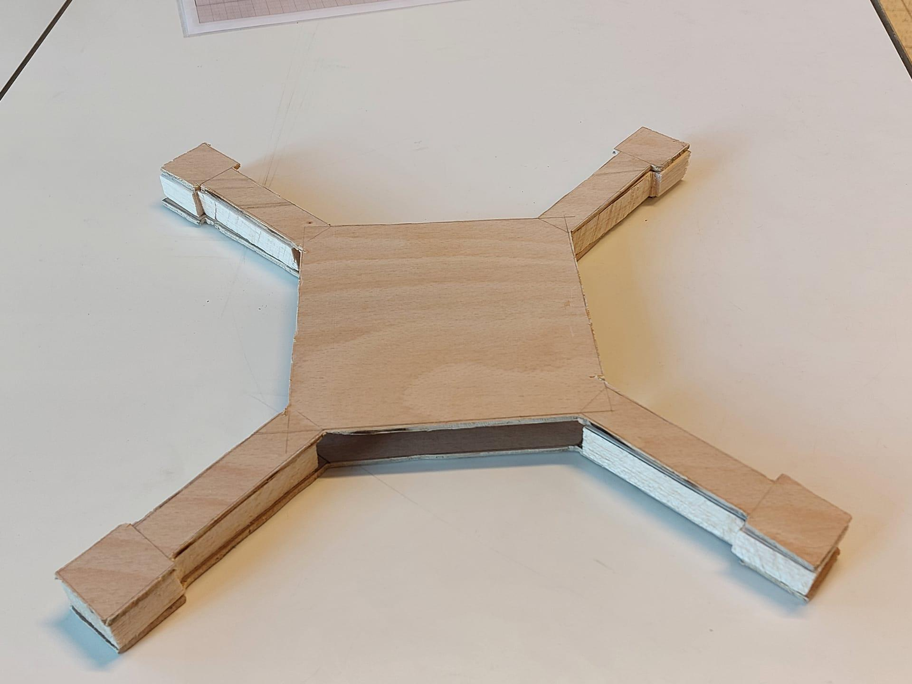

Eindwerken in Seminarie
Hier kun je wat de vorige projecten zien die gemaakt zijn tijdens seminarie STEM. Je zult snel opmerken dat het nog niet veel zijn, dat is niet gek want STEM
als seminarie optie is er pas sinds dit jaar (2021). Kijk maar een beetje rond dan kun je zien wat je kan verwachten als je STEM als je voor STEM als seminarie kiest
Klok met zandloper timer
Dit is het project van Liam Verhulst en Marthe Ceulemans.
Zij hebben een klok gemaakt die digitaal de tijd kan weergeven en ook een optie heeft om een timer in te stellen die visueel word weergeven door een bar die langsaam leegloopt.
Dit hebben ze voor elkaar gekregen door een led schermpje zo te coderen dat de juiste lampjes oplichten om de tijd weer te kunnen geven en bij de timer om op het juiste tijdstip
een rij lampjes uit te doen.
Deze klok hebben ze gemaakt om vooral mensen te helpen die slecht hun tijd kunnen indelen en een op een leuke manier een timer kunnen zichtbaar maken.

Automatisch water geven aan een plant
Dit is het project van Ismael Diallo en Vannessa Daniel.
Zij hebben die jaar samengewerkt om een plantenbak te maken die zichzelf water geeft als hij merkt dat er te weinig water in de grond zit.
Dit doen zij door de grond humiditeit te meten en vanaf een bepaalde waarde een motor aan te zetten die water uit een resevoir of uit de kraan in de pot laat lopen die stopt zodra de humiditeit
weer hoog genoeg is voor de plant.
Zij hebben dit gemaakt voor mensen die niet vaak thuis zijn doordat ze op reis gaan of voor mensen die hun planten vaak vergeten water te geven, het is perfect
voor de wat luiere mens die zich geen zorgen wilt maken om zijn plant of die wel of niet water heeft.

Zelfgemaakte drone
Jonas Kamoen en Simon Xhaet hebben samen een drone proberen te maken.
Zij waren dit jaar er heel erg enthousiast ingestapt bij STEM en wouden meteen een drone maken. Zij wouden dit bereiken door een houten frame te laten vliegen
door er motoren aan te hangen met propelors die het zouden laten opstijgen. Ondanks al hun moeite is het hun niet gelukt de drone te laten stijgen omdat ze niet het materiaal
en kennis hadden om de drone licht genoeg te maken voordat het einde van het jaar eraan kwam.
Ze verdienen zeker wel een plaats hier op de website omdat hun drone er toch wel bad-ass uitzag met de materialen die ze hadden.